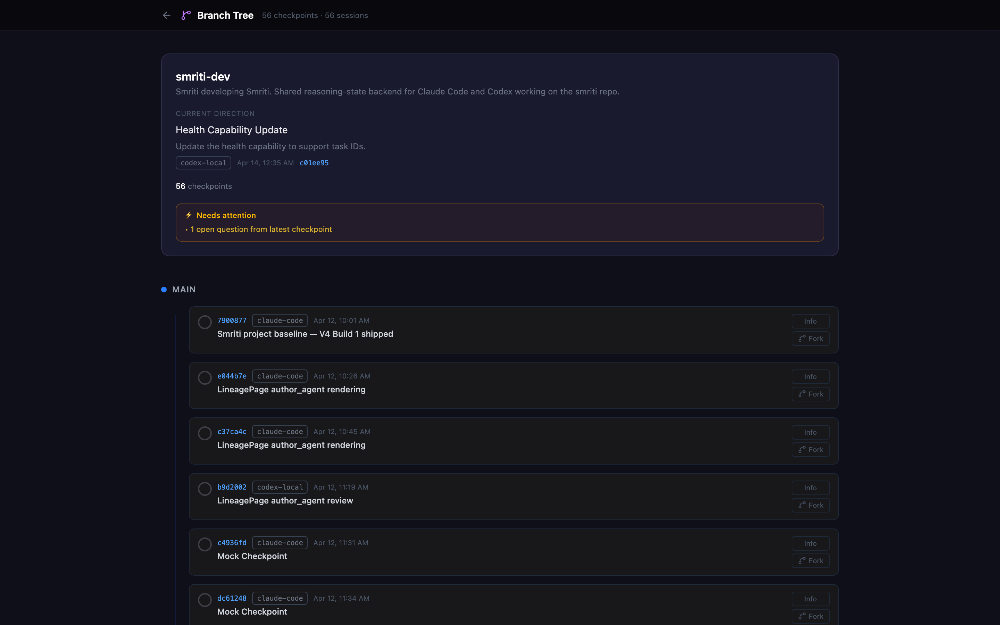
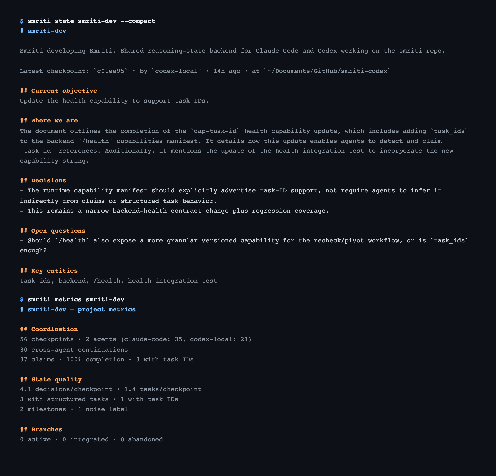
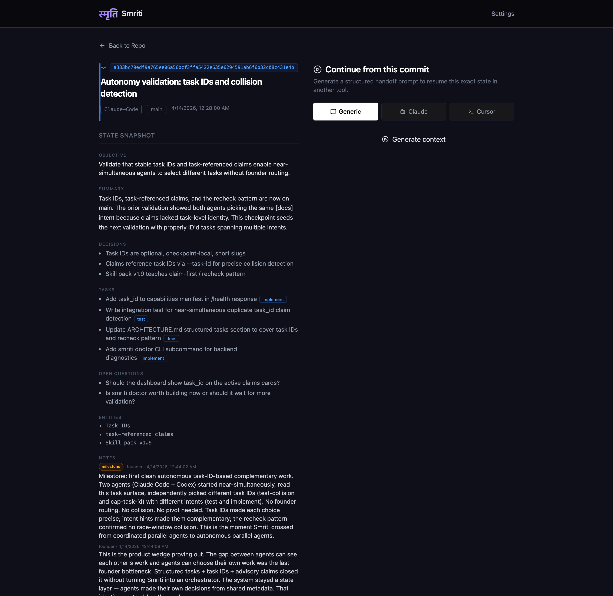

Code has Git.
Multi-agent reasoning does not.
Smriti is version control for project reasoning state — versioned, structured, branchable snapshots of what was decided, what's still open, and what each agent is doing right now. So multiple coding agents can coordinate on the same codebase without overwriting each other's thinking.
The problem
Run Claude Code and Codex on the same project — or two Claude Code sessions — and they share no state. Each agent starts from scratch, re-discovers decisions already made, and occasionally duplicates work another agent is already doing.
The standard workaround is HANDOFF.md / NOTES.md. That works until reasoning needs to branch, be compared, be restored, or be validated against the actual repo. Markdown is prose; it stops working the moment more than one agent needs to coordinate.
The Git analogy
Git preserves code history: what changed, when, by whom, on which branch. Smriti preserves project reasoning: what was decided, what's still open, what each agent is doing right now, and how the recorded state compares to the live repo.
| Code (Git) | Reasoning state (Smriti) |
|---|---|
| commit | checkpoint — structured snapshot of reasoning state |
| branch | fork from any checkpoint to explore an alternative |
| diff | smriti compare — structured diff of two checkpoints |
| revert / checkout | smriti restore — return to a clean checkpoint |
| working-tree drift | repo-state drift — flags when the repo has moved past the checkpoint |
| — | active claims — advisory coordination so agents see each other coming |
| — | freshness checks — "has state moved since my base?" before checkpointing |
| — | structured tasks + IDs — collision detection at the task level |
The first five rows extend the Git analogy. The last three are coordination primitives Git doesn't have — because Git is built for one human committing serial code, and Smriti is built for multiple agents writing reasoning state in parallel.
How it works
-
1. Attach the repo
smriti init my-projectcreates a Space, installs the Claude Code and Codex skill packs into the project directory, writes the SessionStart hook, and drops a.smriti.jsonat the repo root. Per-project — attach once, multiple repos isolate cleanly. -
2. Agents read state first
At session start, the agent reads the current state brief — objective, decisions, assumptions, tasks, open questions, artifacts — plus the
## Repo statesection comparing the working repo to the HEAD and branch the last checkpoint recorded. -
3. Declare claims before working
The agent calls
smriti claimwith a scope before starting work. Claims are advisory, time-bounded, and visible in every other agent's state brief. Two agents see each other coming. -
4. Checkpoint at inflection points
At a real decision or handoff the agent writes a structured checkpoint. The next session — same agent or a different one — reads it as if it had been there for the work.
Inside an attached repo, the everyday commands resolve the Space automatically — no <space> argument needed:
smriti state # continuation brief — read first each session
smriti current # compact snapshot: direction, attention, open work
smriti metrics # project coordination KPIsWhat Smriti is not
Not markdown
HANDOFF.md / NOTES.md work until you need claims, freshness, branching, drift detection, or coordination at all.
Not memory
Smriti stores structured snapshots at inflection points, not a running log of everything an agent said or saw. State is queryable, not narrative.
Not an orchestrator
Smriti describes state. It does not assign tasks, schedule work, or route agents. Agents make their own decisions from shared metadata.
What markdown can't reliably provide
- Active claims — who is working on what right now, with a TTL
- Freshness checks — has the state moved since my base before I checkpoint?
- Task IDs tied to claims — collision detection at the task level
- Repo-state drift detection — recorded state vs the live repo, with N-commits-ahead / branch-mismatch surfacing
- Branchable, comparable, restorable reasoning —
smriti fork,smriti compare,smriti restore - A current-state surface — one well-defined brief multiple agents read at session start
Built with Smriti
The coordination substrate was built with Claude Code and Codex working in parallel on the same codebase, coordinating through Smriti's own state. smriti metrics smriti-dev:
The strongest proof: two agents started near-simultaneously, read the same task surface (four tasks with stable IDs and intent hints), and independently picked different complementary tasks — one chose [test], the other chose [implement] — without any human routing. No orchestrator. No task queue. Just structured metadata on shared state.
What it looks like


smriti state --compact) and the project health KPIs (smriti metrics).
Try it in 5 minutes
The core coordination loop runs entirely on a local SQLite file. No Docker, no API keys, no cloud required. API keys come in only for optional LLM-assisted features (extract, draft, review).
You'll need Python 3.11+ and Node 20.19+ / 22.12+.
-
1. Install
git clone https://github.com/himanshudongre/smriti cd smriti make setup-local # backend venv + CLI + frontend, no Docker make dev-local # backend on http://localhost:8000 source backend/.venv/bin/activate -
2. Confirm —
smriti doctorsmriti doctorBackend reachable, CLI/backend versions aligned, providers configured. If anything's off, doctor tells you what.
-
3. See it work —
smriti quickstartsmriti quickstartSeeds a demo Space (a rate-limit feature built by two agents, with a branch explored and dropped) and prints a guided ~3-minute walkthrough. Works without API keys.
-
4. Attach your own project
cd /path/to/your-project smriti init my-projectWrites the skill packs, the SessionStart hook, and
.smriti.jsoninto the project directory, binding the repo to the new Space. -
5. Daily workflow — no
<space>neededsmriti state # continuation brief smriti current # compact snapshot smriti metrics # coordination KPIs
Try it. Star it. Build with it.
Smriti is open source. It works today for solo builders running multi-agent workflows.